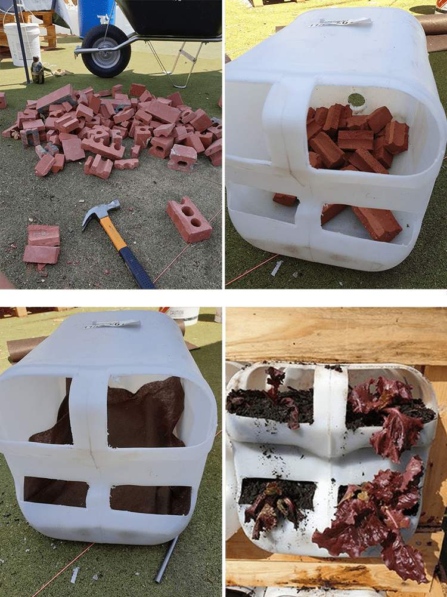
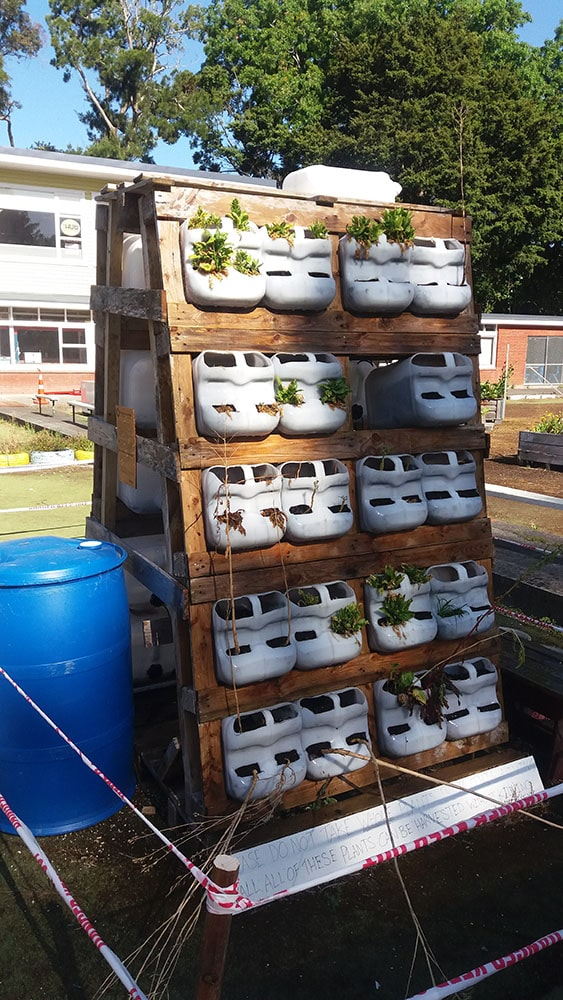

Living Wall :
Growing Food on a Pocket-sized Space
Some of us are exploring the potential for growing edible plants off-soil within an urban area, expanding the growing space upwards.
The Basic Stuff
and
How to get involved
This project has initially received funding under the Creative Communities Scheme and the Waste Minimisation and Innovation Fund - nz$2800 - covering the purchase of material we could not divert from landfill. The brain juice and muscle power are generously donated by a team of green geeks in their spare time. Any donations of any kind are welcome. Everyone is welcome to partake in the building effort or help us gather all items required to make it happen.
If you wish to participate, drop us a line using the form below - Many thanks!
Ideation and Prototyping
- September 2018 -
Inital design for the Creative Communities Scheme
The concept of vertical gardening is not new and makes sense if feeding a community of individuals with little floor space available. It has been relentlessly used in urban areas as a response to the spread of cities swallowing the countryside. It is a natural solution to keep food production hyper-local for city-dwellers.
The project was initially pitched to the Creative Communities Scheme as an art installation, bringing forward the opportunities of gathering locals around a fun, low tech outdoor project, learning about growing food and designing an interactive piece of art along a walkway.
While the funding was partially successful, none of it was dedicated to relocating a rapid prototyping, mobile space containing the many tools required for the fabrication of the wall. Therefore the opportunity to teach and learn about electronics and digital fabrication - an essential part of the deal to receive funding - faded, and the project was set aside.
- February 2019 -
The concept was picked back up a few months later, and its design revisited. Playing with the idea of making the wall out of material majoritarily upcycled/diverted from the landfill, the design was dictated by the items available, using the very convenient "adopt a resource" Ecomatters Environment Trust webpage.

Revisit of the design and first prototype
Several types of openings for future plants and Testing for lighting at night

Maximising the use of the space by creating a double-sided wall

Prototyping the automated irrigation system
It took a few days to reach a satisfactory prototype that we really wanted to share with other curious minds to allow the project to expand. Running a workshop open for all seemed rushed, but the idea of testing out the concept with some friends seemed ideal.
First Workshop
- March 2019 -
The space ready to welcome everyone for a workshop
On a Wednesday afternoon, we collected a fair amount of material, snacks and drinks, ready to welcome everyone. During the following hours, we juggled between tasks and groups to offer to our guests the opportunity to partake in our project. We did our best to do so in a way that was meaningful to them, tailoring the tasks according to their skills or interests.

Designing a second wall and Testing different types of growing mediums

We stick to a reuse/recycling ethos, giving a second life to discarded products
Friends of friends decided to swing by, and passerby's joined the conversation. We got to hear more from other knowledgeable participants. The space, usually empty, felt alive for the duration of this gathering.

The first "vertical" lettuce of the wall
This first workshop was very insightful, helping us appreciate what was required to run a successful event. We are now hoping to be able to extend the funding period to provide this activity over the next months, grow the crowd and turn this prototype into a fully functional system.
Winter is Summer Elsewhere
- March 2019 -
At the beginning of March, Gribblehirst Hub informed us that the Local Council had requested that all initiatives on the Commons had to stop immediately. The reasons for doing so were unclear to us. The project paused, waiting for the green lights to resume.
In the meantime, the garden keeps on growing, with no input on our side. The regular showers keep filling up the water reserve of each container, the sun hits both sides of the wall daily. The result is unexpectedly lush.
One of us decides to skip winter by travelling to Europe and carry on more experiments. At a smaller scale, he recreates a similar vertical setup and adds a water pump that is solar-powered to cycle water through the whole system. This is necessary to face high temperature during the European summer, while considerably lowering water usage, which is critical in a place with annual drought.
Two prototypes. Electronic parts appear.
Another key addition is tested during this time: The soldier fly larvae. These voracious larvae seem to feed on anything; they will be the way to transform our food scrap into protein. This is a first attempt to answer the needs of these creatures throughout their entire lifecycle: as larvae, pupae, and flies. I quickly learn that their metabolism varies greatly according to the temperature.
Detail of the section dedicated to black soldier flies at larvae stage.
BSFL life cycle. Source: https://substance.etsmtl.ca/
This is the first step towards creating a small-scale "ecosystem". It will be completed when fish will be added, feeding on the larvae, and providing nutrients for the plants. This will require a full-scale prototype to host fish large enough to feed on the larvae.
A New Beginning
- November 2019 -
After many months of complete stop, the activities on the Commons can resume. However, the momentum that the core community had generated months ago is now long gone. The living wall is a vestige of an old era.

Some core members have lost trust in the project. They are not wanting to put any effort into the Commons, fearing another abrupt halt imposed by the council, reducing their progress to ashes. Furthermore, an assessment of the Commons now requires some extra work from us to relocate some large structures around and clean up an immense mess that was left behind. It is all like finding a messy kitchen in the morning: a little disheartening. But what can one do?
We get back into it. This time we set up a large scale prototype for the black soldier fly larvae (BSFL) and fish. A separated prototype emerges, with a full-scale solar-powered system planned. Larvae are placed in their container, and two scales will enable us to measure how much food scrap can this system take, and how much "fish food" is generated.
The living wall is relocated to its final spot, wasp free, and benefits from a big clean up as well as re-design, so as to fit the fishtank within its centre:
We are back on track, weighing anything that goes in and out of the system, and approaching the local cafes about their own ways to deal with food scrap, intending to make an offer to them. The wall even gets a mention on a lifestyle website :
Source: https://www.grownups.co.nz/
What comes next took everybody by surprise I guess...
Relocation
- March 2020 -
A pandemic is a reasonable ordeal to reconsider a few things.
As the warning level went up, we were not allowed to gather or go out for anything but fresh air. Since the Commons are far away from home, the larvae were going to die out of starvation and the project put aside. Unless...
We rebuilt the whole wall at home. Although we did lose track of the amount of food scrap given to the BSFL - there were more important things to care about during this very unique period - we ended up recreating something similar to the entire setup. What is more, we set up the automatic watering system, saving a huge amount of water - very much at the same time as the drought occurred.

new location
new watering system
new seedlings
new larvae house
The fish will soon be introduced to their new home. The "living" component of the living wall involves all sorts of needs from the hosts that we need to keep track of and possibly regulate: heat, humidity, sunshine, extra nutrition, water, and presence of tiny bacteria working hard to turn ammonia into nitrate. A diagram explains it better :
new larvae house
By committing to take these measurements, we take one step towards defining the ecological and economic potential of the living wall. Going through an academic study of Black soldier Fly Larvae in Sweden, it seems possible for each of these units to convert 15kg of food scrap fortnightly, as long as they are equipped with around 10.000 grubs each.
To get there we will have to find solutions to many challenges including temperature variation - the grubs like it hot and will need some comforting through the NZ winter.
As for the social benefits, we have already had numerous chats from neighbours passing by, opportunities to discuss local resilience, fresh food and more simply what each others name was.
Meet the team
Below are the Members who took, or are taking part in this project :


Contributors, Friends and Supporters

Hackland is an independent, not for profit Hackspace not far from us, hosting the many inventions and tools of very creative people.
Through the "Adopt a resource" program, EcoMatters has supported our initiative.
Based in Auckland in Aotearoa New Zealand, EcoMatters is an established charitable trust that was formed in 2002. EcoMatters work with and for the community to deliver environmental initiatives in partnership with key entities like Auckland Council, the Ministry for the Environment, other not-for-profits and community groups.

A bunch of humans dedicated to experimenting with the concept of locally productive, globally connected Fab-Cities at New Zealand scale.
Creative New Zealand has supported this project with a funding of nz$ 1500.
Creative New Zealand encourages, promotes and supports the arts in New Zealand for the benefit of all New Zealanders through funding, capability building, our international programme and advocacy.
WMIF has supported this project with a funding of nz$ 1370.
The fund has a specific focus on seed funding new initiatives – including developing business and community-based resource recovery centres and programmes.